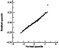
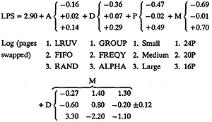

| Previous | Table of Contents | Next |
| TABLE 23.7 Errors in the Paging Study | ||||||||||
|---|---|---|---|---|---|---|---|---|---|---|
| GROUP | FREQY | ALPHA | ||||||||
| Algorithm | Program | 24P | 20P | 16P | 24P | 20P | 16P | 24P | 20P | 16P |
| LRUV | Small | 0.18 | 0.08 | -0.07 | 0.11 | -0.04 | -0.02 | -0.05 | -0.04 | 0.01 |
| Medium | -0.05 | -0.13 | 0.04 | 0.01 | 0.02 | 0.10 | -0.18 | 0.07 | 0.11 | |
| Large | -0.13 | -0.26 | 0.01 | -0.14 | 0.04 | 0.03 | 0.22 | 0.04 | 0.04 | |
| FIFO | Small | 0.17 | 0.04 | 0.09 | 0.11 | -0.02 | -0.07 | -0.08 | -0.04 | -0.08 |
| Medium | 0.05 | -0.10 | 0.07 | -0.02 | 0.04 | 0.05 | -0.13 | 0.14 | 0.02 | |
| Large | -0.10 | -0.20 | 0.02 | -0.00 | 0.00 | -0.03 | 0.25 | 0.09 | -0.02 | |
| RAND | Small | 0.16 | 0.09 | -0.06 | 0.14 | -0.05 | -0.07 | -0.08 | -0.08 | -0.08 |
| Medium | -0.10 | 0.04 | 0.04 | -0.02 | 0.00 | 0.01 | -0.11 | -0.02 | -0.02 | |
| Large | -0.17 | 0.44 | 0.04 | -0.15 | 0.00 | -0.01 | 0.16 | -0.08 | -0.01 | |
| Data from Tsao and Margolin (1971). Reprinted with permission. | ||||||||||

FIGURE 23.1 Normal quantile-quantile plot for the residuals of the paging study.
Thus, it was concluded that the observations do satisfy the following multiplicative model:

Notice that this is a good way to summarize the model.
The analysis techniques presented so far produce the main effects, the interactions, and their confidence intervals. If the goal is simply to find the best combination of factor levels—the combination that produces the best performance—two much simpler techniques that are presented in this section can be used. These techniques are informal and their results can be easily explained to decision makers without getting into statistical details. Also, analysts may find these techniques useful for preliminary analysis before performing the analysis of variance. These techniques, known as observation method, ranking method, and range method are described next.
If the response variable is a HB (Higher is Better) or LB (Lower is Better) metric (defined in Section 3.4) and the goal is simply to find the combination of factor levels that produces the best response, then a simple look at the mean response column will suffice to find the answer. The experiment corresponding to the highest response (for an HB metric) or the lowest response (for an LB metric) is found, and its levels give the desired combination. If there are other responses, which are close to the best response, then the factor levels common to all such responses provide the desired answer.
| Previous | Table of Contents | Next |
){kind=link}
){kind=link}